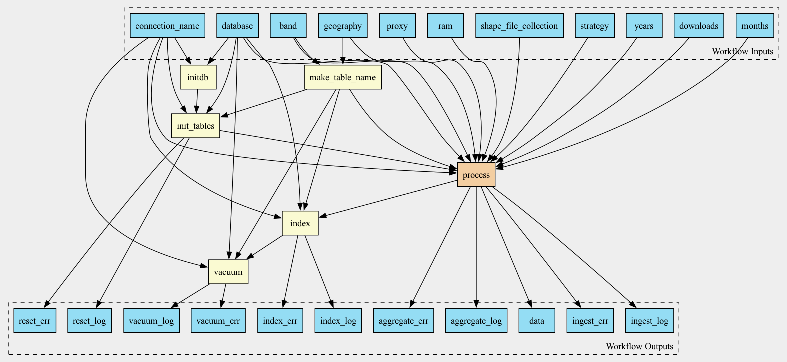

Pipeline to ingest Pollution downloaded from WashU Box

Workflow
Description
Workflow to aggregate pollution data coming in NetCDF format over given geographies (zip codes or counties) and ingest the aggregated data into the database
Inputs
Name |
Type |
Default |
Description |
|---|---|---|---|
proxy |
string? |
HTTP/HTTPS Proxy if required |
|
shapes |
Directory? |
Do we even need this parameter, as we isntead downloading shapes? |
|
shape_file_collection |
string |
|
Collection of shapefiles, either GENZ or TIGER |
downloads |
Directory |
Directory, containing files, downloaded and unpacked from WUSTL box |
|
geography |
string |
Type of geography: zip codes or counties Valid values: “zip” or “county” |
|
years |
int[] |
|
|
months |
int[] |
|
|
band |
string |
|
|
strategy |
string |
|
Rasterization strategy |
ram |
string |
|
Runtime memory, available to the process |
database |
File |
Path to database connection file, usually database.ini |
|
connection_name |
string |
The name of the section in the database.ini file |
Outputs
Name |
Type |
Description |
|---|---|---|
data |
array |
|
aggregate_log |
array |
|
aggregate_err |
array |
|
ingest_log |
array |
|
ingest_err |
array |
|
reset_log |
File |
|
reset_err |
File |
|
index_log |
File |
|
index_err |
File |
|
vacuum_log |
File |
|
vacuum_err |
File |
Steps
Name |
Runs |
Description |
|---|---|---|
initdb |
Ensure that database utilities are at their latest version |
|
make_table_name |
Evaluates JavaScript expression |
Given variable and geography type (zip/county) evaluates table name |
init_tables |
creates or recreates database tables, one for each band and geography |
|
process |
Downloads raw data and aggregates it over shapes and time |
|
index |
||
vacuum |